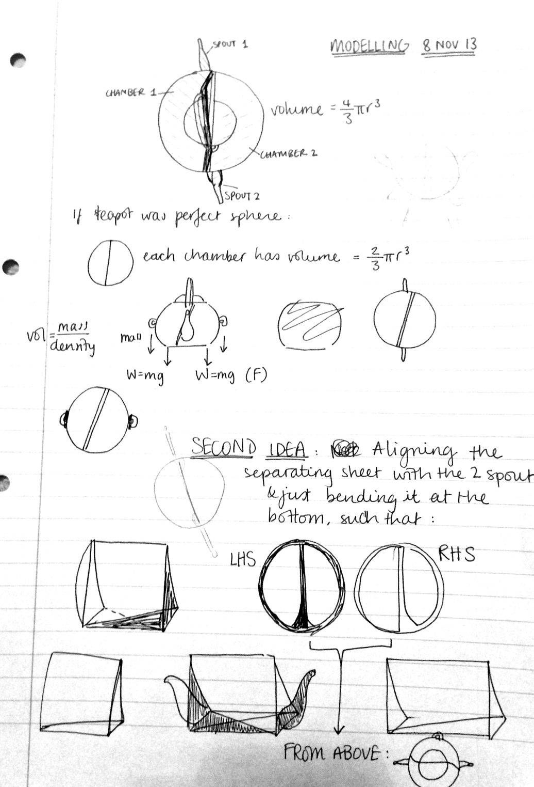

Modelling is crucial to test the facets of my teapot that could go (very) wrong. My design evaluation criteria includes a rocking, boiling hot container that not only rocks, but whose weight keeps on changing as water is poured in and out of the teapot. Moreover, my criteria also includes a rocking teapot that does not drip... I know, what could ever go wrong here?
Given the frailty of my teapot at first glance, I need to make sure that the aspects that could go wrong are modelled before I create a working prototype. Modelling essentially entails representing the functioning of an aspect of my teapot by simplifying and constraining it to a consistent set of rules. These rules are used for interpretation and calibrating the model to understand when things will go wrong and so how to avoid these from going wrong.
I have identified three facets that I want to model:
I hope to work on the modelling of each of the points above over the next week. Below are some initial thoughts on how to optimise the splitting of the two chambers. I came up with a way (drawn in red) to ensure that the teapot can always be in equilibrium position, regardless of the amount of water inside each chamber. However, a problem that the user will have is that the teapot will never go back to its equilibrium position unless the user makes sure to carefully put back the teapot back to its rest position on the stand. I am currently working to find a way to solve this problem.
